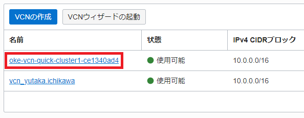
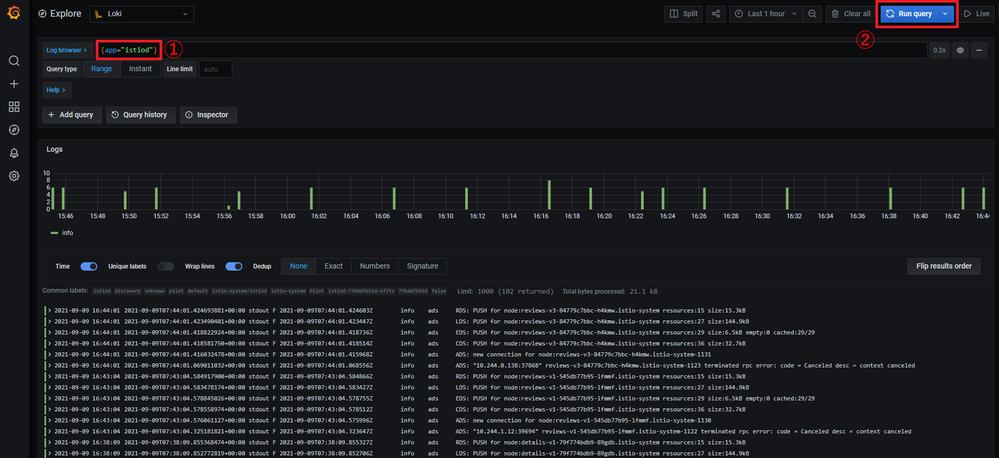
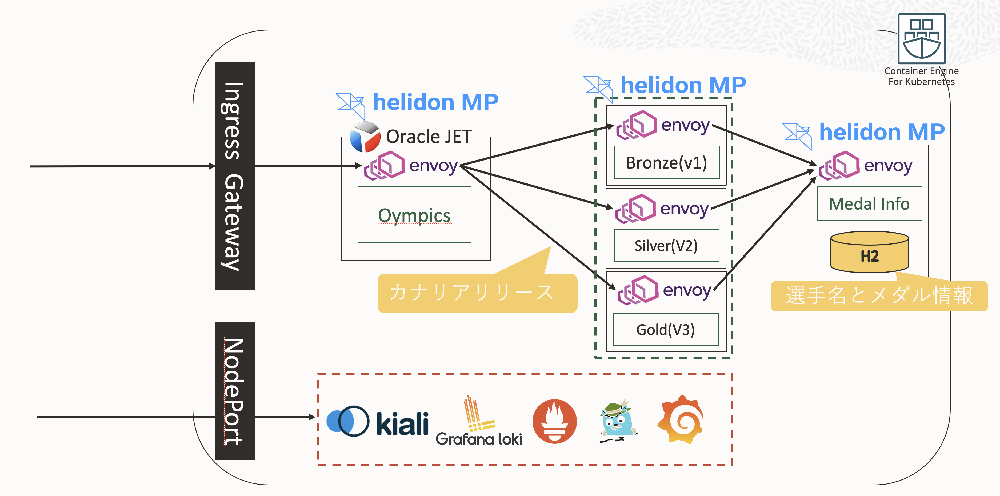
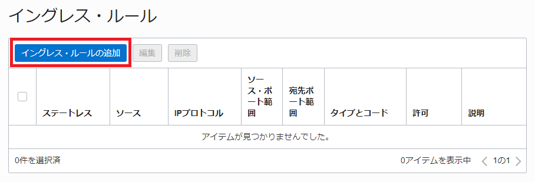
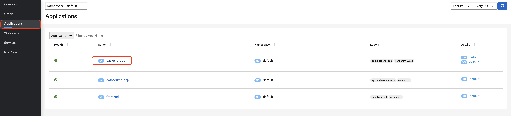
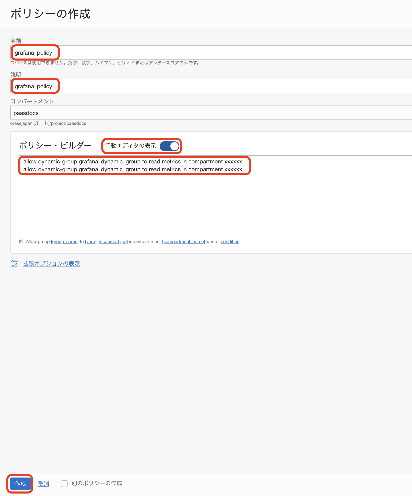
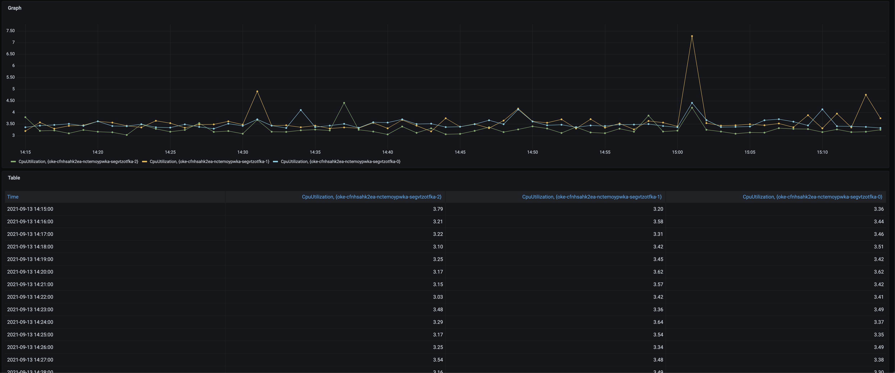

このハンズオンでは、Oracle Container Engine for Kubernetes（以下OKE）上に、マイクロサービスアプリケーションをデプロイします。そして、OSSのオブザバビリティツールを利用して、モニタリング、ロギング、トレーシングを実践的に学びます。
オブザバビリティツールとして、以下を利用します。
モニタリング
ロギング
トレーシング
サービスメッシュオブザバビリティ
ハンズオンの流れは以下となります。
- OKEクラスタ構築
- OCIダッシュボードからOKEクラスタの構築
- Cloud Shellを利用してクラスタを操作
- サービスメッシュとオブザバビリティ環境構築
- Istio（addon: Prometheus, Grafana, Jaeger, Kiali）インストール
- Grafana Loki インストール
- Grafana Lokiのセットアップ
- node exporterのインストール
- Prometheus WebUIからPromQLの実行
- サンプルアプリケーションでObservabilityを体験してみよう
- サンプルアプリケーションの概要説明
- サンプルアプリケーションのビルドとデプロイ
- Grafana Lokiを利用したログ監視
- Jaegerを利用したトレーシング
- Kialiを利用したService Meshの可視化
- Istioを利用したカナリアリリース
- カナリアリリース
1.OKEクラスタ構築
1-1 OCIダッシュボードからOKEクラスタの構築
左上のハンバーガーメニューを展開して、「開発者サービス」から「Kubernetesクラスタ(OKE)」を選択します。

「クラスタの作成」ボタンをクリックします。

「クイック作成」が選択されていることを確認して、「ワークフローの起動」ボタンをクリックします。

以下を設定します。
「Kubernetesワーカー・ノード」:「パブリック・ワーカー」 「シェイプ」：「VM Standard.E3.Flex」 「OCPU数の選択」:「2」 「メモリー量（GB）」：「32」

画面左下の「次」ボタンをクリックします。

画面左下の「クラスタ作成」ボタンをクリックします。

画面左下の「閉じる」ボタンをクリックします。

黄色の「作成中」から緑の「アクティブ」になることを確認します。「アクティブ」であればクラスタ作成は完了です。

1-2 Cloud Shellを利用してクラスタを操作
Cloud Shellを利用して、作成したKubernetesクラスタに接続します。
「クラスタへのアクセス」ボタンをクリックします。

「Cloud Shellの起動」ボタン、「コピー」リンクテキスト、「閉じる」ボタンの順にクリックします。

Cloud Shell起動後、「コピー」した内容をペーストして、Enterキーを押します。

以下コマンドを実行して、3ノードの「STATUS」が「Ready」になっていることを確認します。
kubectl get nodes
コマンド結果
NAME STATUS ROLES AGE VERSION
10.0.10.111 Ready node 61m v1.20.8
10.0.10.254 Ready node 61m v1.20.8
10.0.10.87 Ready node 61m v1.20.8
2.サービスメッシュとオブザバビリティ環境構築
2-1 Istio（addon: Prometheus, Grafana, Jaeger, Kiali）インストール
Istio 1.11.0 をインストールします。
バージョン値を変数にします。
ISTIO_VERSION=1.11.0
公式からインストールに必要なものをダウンロードします。
curl -L https://istio.io/downloadIstio | ISTIO_VERSION="${ISTIO_VERSION}" sh -
コマンド結果
% Total % Received % Xferd Average Speed Time Time Time Current
Dload Upload Total Spent Left Speed
100 102 100 102 0 0 213 0 --:--:-- --:--:-- --:--:-- 212
100 4549 100 4549 0 0 6425 0 --:--:-- --:--:-- --:--:-- 6425
Downloading istio-1.11.0 from https://github.com/istio/istio/releases/download/1.11.0/istio-1.11.0-linux-amd64.tar.gz ...
Istio 1.11.0 Download Complete!
Istio has been successfully downloaded into the istio-1.11.0 folder on your system.
Next Steps:
See https://istio.io/latest/docs/setup/install/ to add Istio to your Kubernetes cluster.
To configure the istioctl client tool for your workstation,
add the /home/yutaka_ich/istio-1.11.0/bin directory to your environment path variable with:
export PATH="$PATH:/home/yutaka_ich/istio-1.11.0/bin"
Begin the Istio pre-installation check by running:
istioctl x precheck
Need more information? Visit https://istio.io/latest/docs/setup/install/
istioctlコマンドを実行できるようにパスを通します。
export PATH="${PWD}/istio-${ISTIO_VERSION}/bin:${PATH}"
Istioのバージョンを確認します。バージョンが表示されることで、istioctlコマンドが利用できる状態です。
istioctl version
コマンド結果
no running Istio pods in "istio-system"
1.21.0
Istioのコンポーネントをインストールします。
istioctl install --set profile=demo --skip-confirmation --set components.cni.enabled=true
コマンド結果
✔ Istio core installed
✔ Istiod installed
✔ CNI installed
✔ Egress gateways installed
✔ Ingress gateways installed
✔ Installation complete
Thank you for installing Istio 1.11. Please take a few minutes to tell us about your install/upgrade experience! https://forms.gle/kWULBRjUv7hHci7T6
必要なアドオン（Prometheus,Grafana,Kiali,Jaegerなど）をインストールします。
kubectl apply -f "istio-${ISTIO_VERSION}/samples/addons/"
コマンド結果
serviceaccount/grafana created
configmap/grafana created
service/grafana created
deployment.apps/grafana created
configmap/istio-grafana-dashboards created
configmap/istio-services-grafana-dashboards created
deployment.apps/jaeger created
service/tracing created
service/zipkin created
service/jaeger-collector created
serviceaccount/kiali created
configmap/kiali created
clusterrole.rbac.authorization.k8s.io/kiali-viewer created
clusterrole.rbac.authorization.k8s.io/kiali created
clusterrolebinding.rbac.authorization.k8s.io/kiali created
role.rbac.authorization.k8s.io/kiali-controlplane created
rolebinding.rbac.authorization.k8s.io/kiali-controlplane created
service/kiali created
deployment.apps/kiali created
serviceaccount/prometheus created
configmap/prometheus created
clusterrole.rbac.authorization.k8s.io/prometheus created
clusterrolebinding.rbac.authorization.k8s.io/prometheus created
service/prometheus created
deployment.apps/prometheus created
Istioで利用するサイドカープロキシを自動でPodに挿入する設定を加えます。
kubectl label namespace default istio-injection=enabled
コマンド結果
namespace/default labeled
現時点では、Kubernetesクラスタ外部からアクセスできない状況です。
アドオンとしてインストールしたPrometheus、Grafana、Kiali、JaegerのWebコンソールにブラウザからアクセスできるように、
各コンポーネントのServiceオブジェクトにNodePortの設定を行います。
kubectl patch service prometheus -n istio-system -p '{"spec": {"type": "NodePort"}}'
コマンド結果
service/prometheus patched
kubectl patch service grafana -n istio-system -p '{"spec": {"type": "NodePort"}}'
コマンド結果
service/grafana patched
kubectl patch service kiali -n istio-system -p '{"spec": {"type": "NodePort"}}'
コマンド結果
service/kiali patched
kubectl patch service tracing -n istio-system -p '{"spec": {"type": "NodePort"}}'
コマンド結果
service/tracing patched
ServiceとDeploymentの状況を確認します。
「service/prometheus」、「service/grafana」、「service/kiali」、「service/tracing」のTYPEがNodePortになっていることを確認します。「service/istio-ingressgateway」については、しばらくするとEXTERNAL-IPアドレスが自動で付与されます。
kubectl get services,deployments -n istio-system -o wide
コマンド結果
NAME TYPE CLUSTER-IP EXTERNAL-IP PORT(S) AGE SELECTOR
service/grafana NodePort 10.96.142.228 <none> 3000:30536/TCP 96s app.kubernetes.io/instance=grafana,app.kubernetes.io/name=grafana
service/istio-egressgateway ClusterIP 10.96.50.236 <none> 80/TCP,443/TCP 2m9s app=istio-egressgateway,istio=egressgateway
service/istio-ingressgateway LoadBalancer 10.96.197.12 168.138.xx.xxx 15021:31268/TCP,80:32151/TCP,443:30143/TCP,31400:30084/TCP,15443:32534/TCP 2m9s app=istio-ingressgateway,istio=ingressgateway
service/istiod ClusterIP 10.96.80.173 <none> 15010/TCP,15012/TCP,443/TCP,15014/TCP 2m28s app=istiod,istio=pilot
service/jaeger-collector ClusterIP 10.96.223.176 <none> 14268/TCP,14250/TCP,9411/TCP 95s app=jaeger
service/kiali NodePort 10.96.65.161 <none> 20001:32446/TCP,9090:31546/TCP 95s app.kubernetes.io/instance=kiali,app.kubernetes.io/name=kiali
service/prometheus NodePort 10.96.227.118 <none> 9090:32582/TCP 94s app=prometheus,component=server,release=prometheus
service/tracing NodePort 10.96.67.34 <none> 80:31870/TCP,16685:32400/TCP 95s app=jaeger
service/zipkin ClusterIP 10.96.222.186 <none> 9411/TCP 95s app=jaeger
NAME READY UP-TO-DATE AVAILABLE AGE CONTAINERS IMAGES SELECTOR
deployment.apps/grafana 1/1 1 1 95s grafana grafana/grafana:7.5.5 app.kubernetes.io/instance=grafana,app.kubernetes.io/name=grafana
deployment.apps/istio-egressgateway 1/1 1 1 2m9s istio-proxy docker.io/istio/proxyv2:1.11.0 app=istio-egressgateway,istio=egressgateway
deployment.apps/istio-ingressgateway 1/1 1 1 2m9s istio-proxy docker.io/istio/proxyv2:1.11.0 app=istio-ingressgateway,istio=ingressgateway
deployment.apps/istiod 1/1 1 1 2m28s discovery docker.io/istio/pilot:1.11.0 istio=pilot
deployment.apps/jaeger 1/1 1 1 95s jaeger docker.io/jaegertracing/all-in-one:1.23 app=jaeger
deployment.apps/kiali 1/1 1 1 95s kiali quay.io/kiali/kiali:v1.38 app.kubernetes.io/instance=kiali,app.kubernetes.io/name=kiali
deployment.apps/prometheus 1/1 1 1 94s prometheus-server-configmap-reload,prometheus-server jimmidyson/configmap-reload:v0.5.0,prom/prometheus:v2.26.0 app=prometheus,component=server,release=prometheus
次に、WebブラウザからNodePort経由でアクセスできるように、セキュリティリストを変更します。
OCIコンソールから、[ネットワーキング]-[仮想クラウド・ネットワーク]を選択して対象となるoke-vcn-quick-cluster1-xxxxxxxxxを選択します。


3つあるサブネットのうち、ワーカノードが属するサブネットoke-nodesubnet-quick-cluster1-xxxxxxxxx-regionalを選択します。

リストに表示される、oke-nodeseclist-quick-cluster1-xxxxxxxxxを選択します。

「イングレス・ルールの追加」ボタンをクリックします。

以下を設定して、「イングレス・ルールの追加」ボタンをクリックします。
ソースCIDR: 0.0.0.0/0
宛先ポート範囲: 30000-65535

以上で、セキュリティリストの変更は完了です。
次に、WebブラウザでアクセスするNodeのEXTERNAL-IPを確認します。
利用するEXTERNAL-IPは、どれも利用可能です。Webブラウザで利用する際に、どれか一つ選択をしてください。
kubectl get nodes -o wide
コマンド結果
NAME STATUS ROLES AGE VERSION INTERNAL-IP EXTERNAL-IP OS-IMAGE KERNEL-VERSION CONTAINER-RUNTIME
10.0.10.111 Ready node 61m v1.20.8 10.0.10.111 140.83.60.38 Oracle Linux Server 7.9 5.4.17-2102.204.4.4.el7uek.x86_64 cri-o://1.20.2
10.0.10.254 Ready node 60m v1.20.8 10.0.10.254 140.83.50.44 Oracle Linux Server 7.9 5.4.17-2102.204.4.4.el7uek.x86_64 cri-o://1.20.2
10.0.10.87 Ready node 60m v1.20.8 10.0.10.87 140.83.84.231 Oracle Linux Server 7.9 5.4.17-2102.204.4.4.el7uek.x86_64 cri-o://1.20.2
Prometheus,Grafana,Kiali,JaegerのNodePortを確認します。
TYPEがNodePortとなっているServiceのPORT(S)「xxxxx:30000」コロン後の30000以上のポート番号がNodePort番号です。
Jaegerのサービス名について
サービス名は、Jaegerだけtracingとなるので、ご注意ください。
- Prometheus:prometheus
- Grafana:grafana
- Kiali:kiali
- Jaeger:tracing
kubectl get services -n istio-system
コマンド結果
NAME TYPE CLUSTER-IP EXTERNAL-IP PORT(S) AGE
grafana NodePort 10.96.142.228 <none> 3000:30536/TCP 11m
istio-egressgateway ClusterIP 10.96.50.236 <none> 80/TCP,443/TCP 11m
istio-ingressgateway LoadBalancer 10.96.197.12 168.138.xx.xxx 15021:31268/TCP,80:32151/TCP,443:30143/TCP,31400:30084/TCP,15443:32534/TCP 11m
istiod ClusterIP 10.96.80.173 <none> 15010/TCP,15012/TCP,443/TCP,15014/TCP 12m
jaeger-collector ClusterIP 10.96.223.176 <none> 14268/TCP,14250/TCP,9411/TCP 11m
kiali NodePort 10.96.65.161 <none> 20001:32446/TCP,9090:31546/TCP 11m
prometheus NodePort 10.96.227.118 <none> 9090:32582/TCP 11m
tracing NodePort 10.96.67.34 <none> 80:31870/TCP,16685:32400/TCP 11m
zipkin ClusterIP 10.96.222.186 <none> 9411/TCP 11m
上記コマンド結果を例にすると、以下コロン後の30000以上ポート番号となります。 ご自身のと置き換えて対応してください。
- Prometheus 9090:32582
- Grafana 3000:30536
- Kiali 20001:32446
- Jaeger 80:31870
先ほど確認した、EXTERNAL-IPと各NodePortを指定して、Webブラウザからアクセスしてください。
http://EXTERNAL-IP:NodePort/
2-2 Grafana Loki インストール
Helmを利用して、Grafana Lokiをインストールします。
Helmについて
Helmは、Kubernetesのパッケージマネージャです。パッケージは、Chartと呼ばれ、リポジトリがあります。
Helmは、Linuxのdnfやapt、Chartはrpmやdebのようなものと捉えてください。
Chartは、マニフェストのテンプレート（雛形）であり、そのテンプレートに指定した変数のパラメータをvalues.yamlに定義、
このChartとvalues.yamlの組み合わせで、新たなマニフェストを生成してKubernetesクラスタに登録する仕組みです。
このHelmを利用して、マニフェストをテンプレート化することで、マニフェストが大量とならないように管理の効率化を図ることができます。
Grafana公式のHelmチャートリポジトリを追加します。
helm repo add grafana https://grafana.github.io/helm-charts
コマンド結果
WARNING: Kubernetes configuration file is group-readable. This is insecure. Location: /home/yutaka_ich/.kube/config
WARNING: Kubernetes configuration file is world-readable. This is insecure. Location: /home/yutaka_ich/.kube/config
"grafana" has been added to your repositories
Helmチャートを最新化します。
helm repo update
コマンド結果
WARNING: Kubernetes configuration file is group-readable. This is insecure. Location: /home/yutaka_ich/.kube/config
WARNING: Kubernetes configuration file is world-readable. This is insecure. Location: /home/yutaka_ich/.kube/config
Hang tight while we grab the latest from your chart repositories...
...Successfully got an update from the "argo" chart repository
...Successfully got an update from the "grafana" chart repository
Update Complete. ⎈Happy Helming!⎈
Grafana Lokiをインストールします。
helm upgrade --install loki --namespace=istio-system grafana/loki-stack
コマンド結果
WARNING: Kubernetes configuration file is group-readable. This is insecure. Location: /home/yutaka_ich/.kube/config
WARNING: Kubernetes configuration file is world-readable. This is insecure. Location: /home/yutaka_ich/.kube/config
Release "loki" does not exist. Installing it now.
NAME: loki
LAST DEPLOYED: Sun Aug 22 07:22:15 2021
NAMESPACE: istio-system
STATUS: deployed
REVISION: 1
NOTES:
The Loki stack has been deployed to your cluster. Loki can now be added as a datasource in Grafana.
See http://docs.grafana.org/features/datasources/loki/ for more detail.
「Loki-0」、「loki-promtail-xxxxx」(3個)がRunningであることを確認します。
kubectl get pods -n istio-system
コマンド結果
NAME READY STATUS RESTARTS AGE
grafana-556f8998cd-bkrw8 1/1 Running 0 36m
istio-egressgateway-9dc6cbc49-rv9ll 1/1 Running 0 37m
istio-ingressgateway-7975cdb749-tk4rf 1/1 Running 0 37m
istiod-77b4d7b55d-tq7hh 1/1 Running 0 37m
jaeger-5f65fdbf9b-28v7w 1/1 Running 0 36m
kiali-787bc487b7-jkc22 1/1 Running 0 36m
loki-0 1/1 Running 0 2m46s
loki-promtail-lzxg5 1/1 Running 0 2m46s
loki-promtail-rlrq2 1/1 Running 0 2m46s
loki-promtail-s7rfz 1/1 Running 0 2m46s
prometheus-9f4947649-c7swm 2/2 Running 0 36m
2-3 Grafana Lokiのセットアップ
Grafanaにアクセスします。
kubectl get services grafana -n istio-system
コマンド結果
NAME TYPE CLUSTER-IP EXTERNAL-IP PORT(S) AGE
grafana NodePort 10.96.142.228 <none> 3000:30536/TCP 127m
GrafanaのアクセスにはNodePortを利用します。
NodePortはPORT(S)の:以降のポート番号です。
上記の場合、以下のURLにアクセスします。
http://[WorkerNodeのパブリックIP]:30536
左メニューの[Configuration]-[Data Sources]を選択します。

「Add data source」ボタンをクリックします。

「Logging & document databases」にある「Loki」にカーソルを合わせて「Select」ボタンをクリックします。

Lokiの設定画面の「URL」にhttp://loki:3100/と入力、「Maximum lines」に1000と入力して、「Save & Test」ボタンをクリックします。

左メニューの「Explore」を選択します。

画面遷移後、画面左上のプルダウンメニューで「Loki」を選択します。

「Log browser」に{app="istiod"}と入力して、「Run Query」ボタンをクリックします。

ログが表示されれば、セットアップは完了です。
2-4 node exporterのインストール
各ノードのメトリクスを取集するためにnode exporterを各ノードに配備します。
既に作成済みのnode exporterのマニフェストを利用して、Kubernetesクラスタに適用します。
kubectl apply -f https://raw.githubusercontent.com/oracle-japan/ochacafe-s4-6/main/manifests/node-exporter-handson.yaml
コマンド結果
serviceaccount/node-exporter-handson created
service/node-exporter-handson created
daemonset.apps/node-exporter-handson created
node-exporter-handsonというPodの「STATUS」が「Running」であることを確認します。
kubectl get pods
コマンド結果
NAME READY STATUS RESTARTS AGE
node-exporter-handson-56m4h 1/1 Running 0 25s
node-exporter-handson-r7br8 1/1 Running 0 25s
node-exporter-handson-rr2rf 1/1 Running 0 25s
2-5 Prometheus WebUIからPromQLの実行
Prometheus WebUIからPromQLを実行して、3ノードの各ノードのメモリ空き容量と3ノードでのメモリ空き容量の合計を確認します。 まずは、ブラウザでPrometheus WebUIにアクセスします。
kubectl get services prometheus -n istio-system
コマンド結果
NAME TYPE CLUSTER-IP EXTERNAL-IP PORT(S) AGE
prometheus NodePort 10.96.227.118 <none> 9090:32582/TCP 136m
GrafanaのアクセスにはNodePortを利用します。
NodePortはPORT(S)の:以降のポート番号です。
上記の場合、以下のURLにアクセスします。
http://[WorkerNodeのパブリックIP]:32582

node_memory_MemAvailable_bytesを入力して、「Execute」ボタンをクリックします。

各ノードのメモリ空き容量が表示されます。「Graph」タブをクリックすると、グラフで見ることができます。


「Table」タブをクリック後、直近3分の状況を確認します。

node_memory_MemAvailable_bytes[3m]と入力して、「Execute」ボタンをクリックします。
各ノードの直近3分間のメモリの空き容量の状況が表示されます。

次に3ノードのメモリの空き容量を確認します。
sum without (instance, kubernetes_node) (node_memory_MemAvailable_bytes)と入力して、「Execute」ボタンをクリックします。
withoutを利用して、instanceとkubernetes_nodeラベルを除外して、3ノードのsum、合計を出力するPromQLです。

「Graph」タブをクリックすることで、グラフでも確認できます。

PromQLは、メトリクス集約に特化したPrometheus独自のクエリ言語です。このハンズオンで利用したクエリは一例です。 使用方法は、多岐にわたります。詳細は、公式レファレンスを参照してください。
3.サンプルアプリケーションでObservabilityを体験してみよう
この手順では、手順1および2で構築したObservability環境に対してサンプルアプリケーションをデプロイしていきます。
3-1 サンプルアプリケーションの概要説明
まずはホームディレクトリに移動し、以下のGitレポジトリをcloneします。
cd ~
git clone https://github.com/oracle-japan/code-at-customer-handson
このハンズオン用に作成したサンプルアプリケーションです。
中身を簡単に紹介します。
.
├── README.md
├── k8s ==> KubernetesのMainifest群
├── olympic_backend ==> バックエンドアプリケーション
├── olympic_datasource ==> データソースアプリケーション
├── olympic_frontend ==> フロントエンドアプリケーション
.
このサンプルアプリケーションは、主に以下の2つから構成されています。
- Helidon
- Oracleがオープンソースで提供しているJavaのマイクロサービスフレームワーク
- Oracle JavaScript Extension Toolkit（Oracle JET）
- Oracleがオープンソースで開発しているJavascript用フレームワーク
- 業界標準として普及しているオープンソース・フレームワークに基づき、開発者がより優れたアプリケーションをより迅速に構築できるよう支援する高度な機能とサービスを付加
簡単にアプリケーションの構成を見ていきます。
この手順が完了すると全体のイメージは以下のようになります。

大きく上部のサンプルアプリケーションと下部のObservability環境から構成されていますが、下部については手順2で構築済みです。
そのため、以降では、主に上部のサンプルアプリケーションについてみていきます。
また、今回はアプリケーションへのアクセスにistio-ingressgatewayおよびNodePortを利用してアクセスします。
実体としては、istio-ingressgatewayはOracle Cloud Infrastructure Load Balancingサービス、NodePortはWorker NodeとなるComputeインスタンスのPublic IPとPortを利用しています。
そのため、Oracle Cloud Infrastructureの構成としては以下のような図になります。

このサンプルアプリケーションは、3つのコンポーネントから以下のように構成されています。
-
フロントエンドアプリケーション(図中の
Olympics)
HelidonとOracle JETから構成されているアプリケーションです。
Helidonの静的コンテンツルート(今回はresources/web配下)にOracle JETのコンテンツを配置しています。
このアプリケーションは、バックエンドサービス(v1/v2/v3)のいずれかを呼び出します。 -
バックエンドアプリケーション(図中の緑枠部分)
Helidonから構成されているアプリケーションです。 このアプリケーションには3つのバージョンが存在し、それぞれ金メダメリスト(v3)、銀メダリスト(v2)、銅メダリスト(v1)の一覧を返すようになっています。 バージョン情報は環境変数として保持しています。 このアプリケーションは、データソースアプリケーションに対してバージョンに応じたAPIエンドポイントを呼び出し、データを取得しにいきます。 -
データソースアプリケーション(図中の
Medal Info)
Helidonとインメモリで動作しているデータベースであるH2 Databaseから構成されているアプリケーションです。
このアプリケーションでは、メダリストと獲得したメダルの色を保持しており、バックエンドアプリケーションから呼び出されたエンドポイント応じてメダリストとそのメダルの色を返却します。
3-2 サンプルアプリケーションのビルドとデプロイ
ここからは、これらのアプリケーションが含まれたコンテナイメージをビルドしてみます。
まずは、フロントエンドアプリケーションからビルドします。
Helidonについて
HelidonはMavenを利用してプロジェクトの雛形を作成することができます。
コマンドについてはこちらをご確認ください。
この中にはデフォルトでDockerfileも含まれています。
以降で利用するDockerfileも、基本的に上記雛形ファイルを利用しています。
また、HelidonにはHelidon CLIという便利なCLIツールがあります。
Helidon CLIについてはこちらをご確認ください。
cd code-at-customer-handson/olympic_frontend
docker image build -t code-at-customer/frontend-app .
コマンド結果
~~~~
Status: Downloaded newer image for openjdk:11-jre-slim
---> e4beed9b17a3
Step 9/13 : WORKDIR /helidon
---> Running in bbbeffe84be8
Removing intermediate container bbbeffe84be8
---> 518c68977ccc
Step 10/13 : COPY --from=build /helidon/target/olympic_frontend.jar ./
---> 6eb033c8d5ab
Step 11/13 : COPY --from=build /helidon/target/libs ./libs
---> d46766254734
Step 12/13 : CMD ["java", "-jar", "olympic_frontend.jar"]
---> Running in b2e205e5b9ed
Removing intermediate container b2e205e5b9ed
---> a042893b3e8e
Step 13/13 : EXPOSE 8080
---> Running in 7e3a2bb12ed4
Removing intermediate container 7e3a2bb12ed4
---> b96ac0669f0d
Successfully built b96ac0669f0d
Successfully tagged code-at-customer/frontend-app:latest
これでビルド完了です。
ビルドしたコンテナイメージを確認してみます。
docker image ls
コマンド結果
REPOSITORY TAG IMAGE ID CREATED SIZE
code-at-customer/frontend-app latest 5ee35f1e2a49 3 minutes ago 270MB
~~~~
本来であれば、ビルドしたイメージをOCIR(Oracle Cloud Infrastructure Registry)へpushすることになりますが、今回はすでにコンテナイメージはpush済みなので、割愛します。
OCIR(Oracle Cloud Infrastructure Registry)へのpushについて
OCIRへビルドしたコンテナイメージをpushする場合は、Oracle Cloud InfrastructureのネームスペースとOCIRのリージョンを指定したタグ付けを行う必要があります。
詳細はこちらをご確認ください。
ホームディレクトリに戻っておきます。
cd ~
同じようにバックエンドアプリケーションのコンテナもビルドしてみます。
前述した通り、バックエンドアプリケーションはバージョンが3つ存在します。 今回は、そのバージョン情報を環境変数として持たせたDockerfileを用意していますので、それぞれビルドします。
例えば、v1の銅メダリストを返却するバックエンドアプリケーションは以下のようなDockerfileになっており、ENV命令とARG命令で定義しています。
# 1st stage, build the app
FROM maven:3.6-jdk-11 as build
WORKDIR /helidon
# Create a first layer to cache the "Maven World" in the local repository.
# Incremental docker builds will always resume after that, unless you update
# the pom
ADD pom.xml .
RUN mvn package -Dmaven.test.skip -Declipselink.weave.skip
# Do the Maven build!
# Incremental docker builds will resume here when you change sources
ADD src src
RUN mvn package -DskipTests
RUN echo "done!"
# 2nd stage, build the runtime image
FROM openjdk:11-jre-slim
WORKDIR /helidon
# Copy the binary built in the 1st stage
COPY --from=build /helidon/target/olympic_backend.jar ./
COPY --from=build /helidon/target/libs ./libs
ARG SERVICE_VERSION=V1
ENV SERVICE_VERSION=${SERVICE_VERSION}
CMD ["java", "-jar", "olympic_backend.jar"]
EXPOSE 8080
ARG SERVICE_VERSION=V1(デフォルト値はV1)で、ビルド時の--build-argオプションで指定されたバージョンを取得し、
ENV SERVICE_VERSION=${SERVICE_VERSION}で環境変数として定義しています。
ENV命令とARG命令について
Dockerfileでは、コンテナ内で環境変数を扱う際にENV命令が用意されています。
ENV命令は、環境変数と値のセットになっており、値はDockerfileから派生する全てのコマンド環境で利用できます。
また、ARG命令を利用するとdocker image buildコマンド実行時に–build-argオプションで指定された変数をビルド時に利用することができます。
詳細はこちらをご確認ください。
今回はバージョンが3つ存在するので、それぞれビルドしてみます。
cd code-at-customer-handson/olympic_backend
V1をビルドします。
V1はデフォルト値なので、--build-argオプションを付与しなくても良いですが、今回はオプションを付与してビルドしてみます。
docker image build -t code-at-customer/backend-app-v1 --build-arg SERVICE_VERSION=V1 .
コマンド結果
~~~~
Successfully tagged code-at-customer/backend-app-v1:latest
ビルドしたコンテナイメージを確認してみます。
docker image ls
コマンド結果(順不同になる可能性があります)
REPOSITORY TAG IMAGE ID CREATED SIZE
code-at-customer/frontend-app latest 5ee35f1e2a49 13 minutes ago 270MB
code-at-customer/backend-app-v1 latest f585e32a1147 27 minutes ago 243MB
~~~~
V2、V3も同じようにビルドしていきますが、時間がかかるため、今回は割愛します。
V2、V3をビルドすると以下のようにコンテナイメージが作成されます。
REPOSITORY TAG IMAGE ID CREATED SIZE
code-at-customer/frontend-app latest 5ee35f1e2a49 15 minutes ago 270MB
code-at-customer/backend-app-v1 latest 9ba2a2183e29 39 minutes ago 243MB
code-at-customer/backend-app-v2 latest 9ba2a2183e29 39 minutes ago 243MB
code-at-customer/backend-app-v3 latest bb7e737e4940 About a minute ago 243MB
~~~~
本来であれば、ビルドしたイメージをOCIR(Oracle Cloud Infrastructure Registry)へpushすることになりますが、今回はすでにコンテナイメージはpush済みなので、割愛します。
ホームディレクトリに戻っておきます。
cd ~
最後にデータソースアプリケーションのコンテナもビルドしてみます。
cd code-at-customer-handson/olympic_datasource
docker image build -t code-at-customer/datasource-app .
コマンド結果
~~~~
Successfully tagged code-at-customer/datasource-app:latest
ビルドしたコンテナイメージを確認してみます。
docker image ls
コマンド結果(順不同になる可能性があります)
REPOSITORY TAG IMAGE ID CREATED SIZE
code-at-customer/frontend-app latest 5ee35f1e2a49 15 minutes ago 270MB
code-at-customer/backend-app-v1 latest 9ba2a2183e29 39 minutes ago 243MB
code-at-customer/backend-app-v2 latest 9ba2a2183e29 39 minutes ago 243MB
code-at-customer/backend-app-v3 latest 9ba2a2183e29 39 minutes ago 243MB
code-at-customer/datasource-app latest 3a542bedb13a 43 seconds ago 261MB
~~~~
本来であれば、ビルドしたイメージをOCIR(Oracle Cloud Infrastructure Registry)へpushすることになりますが、今回はすでにコンテナイメージはpush済みなので、割愛します。
これで全てのアプリケーションがビルドできました。
ホームディレクトリに戻っておきます。
cd ~
次に、k8sにコンテナアプリケーションをデプロイしていきます。
先ほど、cloneしてきたレポジトリの中にあるk8sディレクトリに移動します。
cd code-at-customer-handson/k8s
先ほどビルドしたコンテナアプリケーションをデプロイするためのManifestがappディレクトリにあるので、配下のファイルを全てデプロイします。
cd app/plain
kubectl apply -f .
コマンド結果
deployment.apps/backend-app-v1 created
deployment.apps/backend-app-v2 created
deployment.apps/backend-app-v3 created
service/backend-app created
deployment.apps/datasource-app created
service/datasource-app created
deployment.apps/frontend-app created
service/frontend-app created
ingress.networking.k8s.io/gateway created
これでOKE上にサンプルアプリケーションがデプロイされました。
デプロイ状況を確認してみます。
kubectl get pods
コマンド結果
NAME READY STATUS RESTARTS AGE
backend-app-v1-5c674f559f-fg2dq 2/2 Running 0 1m
backend-app-v1-5c674f559f-npjk4 2/2 Running 0 1m
backend-app-v2-84f5859c9f-gr6dd 2/2 Running 0 1m
backend-app-v2-84f5859c9f-pmnfl 2/2 Running 0 1m
backend-app-v3-7596dcf967-7dqnq 2/2 Running 0 1m
backend-app-v3-7596dcf967-tbhhw 2/2 Running 0 1m
datasource-app-7bc89cbdfc-pktdp 2/2 Running 0 1m
datasource-app-7bc89cbdfc-vmpr6 2/2 Running 0 1m
frontend-app-75c8986f76-lnhtg 2/2 Running 0 1m
frontend-app-75c8986f76-q5l44 2/2 Running 0 1m
node-exporter-handson-2mcph 1/1 Running 0 21m
node-exporter-handson-57qqq 1/1 Running 0 21m
node-exporter-handson-mbdzl 1/1 Running 0 21m
全てRunningになったら、アプリケーションにアクセスしてみます。
アクセスには手順2で作成したistio-ingressgatewayを経由してアクセスします。
まずは、istio-ingressgatewayのエンドポイントを確認します。
kubectl get services istio-ingressgateway -n istio-system
コマンド結果
NAME TYPE CLUSTER-IP EXTERNAL-IP PORT(S) AGE
istio-ingressgateway LoadBalancer 10.96.176.93 132.226.xxx.xxx 15021:30134/TCP,80:30850/TCP,443:30319/TCP,31400:31833/TCP,15443:30606/TCP 3d3h
上記の場合は、istio-ingressgatewayのEXTERNAL-IPである132.226.xxx.xxxがエンドポイントになります。
この場合は、以下のURLにアクセスします。
http://132.226.xxx.xxx
以下のような画面が表示されればOKです！

何回かアクセスをしてみると、金メダメリスト(v3)、銀メダリスト(v2)、銅メダリスト(v1)がランダムに表示されることが確認できます。
ホームディレクトリに戻っておきます。
cd ~
3-3 Grafana Lokiを利用したログ監視
ここでは、3-2でデプロイしたアプリケーションのログを監視してみます。
まずは、Grafanaにアクセスします。
kubectl get services grafana -n istio-system
コマンド結果
NAME TYPE CLUSTER-IP EXTERNAL-IP PORT(S) AGE
grafana NodePort 10.96.219.44 <none> 3000:31624/TCP 4d3h
GrafanaのアクセスにはNodePortを利用します。
NodePortはPORT(S)の:以降のポート番号です。
上記の場合、以下のURLにアクセスします。
http://[WorkerNodeのパブリックIP]:31624
アクセスしたら、Exploreをクリックします。

画面上部のプルダウンからを選択します。

 をクリックします。
をクリックします。
 にログ対象とするラベルが表示されます。
にログ対象とするラベルが表示されます。
今回は、例として特定のPodのログを確認してみましょう。
対象とするPod名を選択します。
kubectl get pods
コマンド結果
NAME READY STATUS RESTARTS AGE
backend-app-v1-5c674f559f-fg2dq 2/2 Running 0 1m
backend-app-v1-5c674f559f-npjk4 2/2 Running 0 1m
backend-app-v2-84f5859c9f-gr6dd 2/2 Running 0 1m
backend-app-v2-84f5859c9f-pmnfl 2/2 Running 0 1m
backend-app-v3-7596dcf967-7dqnq 2/2 Running 0 1m
backend-app-v3-7596dcf967-tbhhw 2/2 Running 0 1m
datasource-app-7bc89cbdfc-pktdp 2/2 Running 0 1m
datasource-app-7bc89cbdfc-vmpr6 2/2 Running 0 1m
frontend-app-75c8986f76-lnhtg 2/2 Running 0 1m
frontend-app-75c8986f76-q5l44 2/2 Running 0 1m
node-exporter-handson-2mcph 1/1 Running 0 21m
node-exporter-handson-57qqq 1/1 Running 0 21m
node-exporter-handson-mbdzl 1/1 Running 0 21m
例えば、backend-app-v2-84f5859c9f-gr6ddを対象とします。(各自の環境に合わせてください)
 から
からpodを選択するとPod名が表示されます。
対象とするPod名を選択し、show logsをクリックします。

対象のPodが出力したログが表示されます。

Loki上でログをフィルタリングしたり、検索したりすることも可能です。
例えば、現在の状態では、Pod内にIstioによってInjectionされているEnvoyのログも出力されているので、アプリだけのログに絞ってみます。
欄にあるテキストボックスに,container="backend-app"という文字列を追加し、左上の をクリックします。
をクリックします。
のようなクエリになります。
これで、backend-app-v2-84f5859c9f-gr6ddというPodの中のbackend-appというcontainerに絞ることができます。

以上で、Grafana Lokiでのログ監視は完了です。
3-4 Jaegerを利用したトレーシング
続いて、Jaegerを利用してトレーシングを実施してみます。
まずは、アプリケーションにアクセスを行い、トレーシング情報をJaegerに流しましょう。
kubectl get services istio-ingressgateway -n istio-system
コマンド結果
NAME TYPE CLUSTER-IP EXTERNAL-IP PORT(S) AGE
istio-ingressgateway LoadBalancer 10.96.176.93 132.226.xxx.xxx 15021:30134/TCP,80:30850/TCP,443:30319/TCP,31400:31833/TCP,15443:30606/TCP 3d3h
上記の場合は、istio-ingressgatewayのEXTERNAL-IPである132.226.xxx.xxxがエンドポイントになります。
この場合は、以下のURLにアクセスします。
http://132.226.xxx.xxx
次にJaegerのUIにアクセスします。
kubectl get services tracing -n istio-system
コマンド結果
NAME TYPE CLUSTER-IP EXTERNAL-IP PORT(S) AGE
tracing NodePort 10.96.207.90 <none> 80:30483/TCP,16685:31417/TCP 4d4h
JaegerのアクセスにはNodePortを利用します。
NodePortはPORT(S)の:以降のポート番号です。
上記の場合、以下のURLにアクセスします。
http://[WorkerNodeのパブリックIP]:30483
アクセスしたら、Serviceカテゴリにあるプルダウンをクリックし、istio-ingress-gateway.istio.systemをクリックし、Find Traceをクリックします。

これで、istio-ingress-gatewayを経由してルーティングされたトラフィックの流れを見ることができます。

このようにistio-ingress-gateway、frontend-app.default、backend-app.default、datasource-app.defaultの4つのServiceが含まれたトレーシング情報が取得できています。
これをクリックします。

このように一連のトラフィックの流れとそれぞれのレイテンシを確認することができます。
今回は簡単なアプリケーションなので、全体を通して数十~週百msで完了しますが、実際にパフォーマンスでの問題が発生した場合、トレーシング情報を見ることでどの部分がボトルネックになっているのかを確認することができます。
以上で、Jaegerを利用したトレーシングは完了です。
3-5 Kialiを利用したService Meshの可視化
続いて、Kialiを利用したService Meshの可視化を行ってみます。
まずは、KialiのUIを開きます。
kubectl get services kiali -n istio-system
コマンド結果
NAME TYPE CLUSTER-IP EXTERNAL-IP PORT(S) AGE
kiali NodePort 10.96.251.81 <none> 20001:30768/TCP,9090:32228/TCP 4d4h
KialiのアクセスにはNodePortを利用します。
NodePortはPORT(S)の:以降のポート番号です。
上記の場合、以下のURLにアクセスします。
http://[WorkerNodeのパブリックIP]:30768
Kialiでの可視化を行うためにIstioのトラフィック管理設定リソースの一つであるDestinationRuleを作成します。
これは、Serviceリソースを対象としたトラフィックに適用されるポリシーを定義するリソースです。
今回は以下のようなDestinationRuleを作成します。
apiVersion: networking.istio.io/v1alpha3
kind: DestinationRule
metadata:
name: backend
spec:
host: backend-app
trafficPolicy:
loadBalancer:
simple: RANDOM
subsets:
- name: v1
labels:
version: v1
- name: v2
labels:
version: v2
- name: v3
labels:
version: v3
---
apiVersion: networking.istio.io/v1alpha3
kind: DestinationRule
metadata:
name: frontend
spec:
host: frontend-app
subsets:
- name: v1
labels:
version: v1
---
apiVersion: networking.istio.io/v1alpha3
kind: DestinationRule
metadata:
name: datasource
spec:
host: datasource-app
subsets:
- name: v1
labels:
version: v1
例えば、バックエンドアプリケーションに対するDestination Rule(backend)をみてみると、
host: backend-app
trafficPolicy:
loadBalancer:
simple: RANDOM
hostに対してバックエンドアプリケーションのServiceリソースを定義しています。
今回、backend-appに紐づくDeploymentは3つ(3バージョン)存在しています。
trafficPolicy:は複数存在するDeploymentに対する分散ポリシーなどを定義できます。
今回は、RANDOMなので、ランダムにbackend-appに紐づくDeployment(今回は3つ)にトラフィックを分散します。
まずは、このDestinationRuleを適用してみましょう。
ホームディレクトリに戻ります。
cd ~
cd code-at-customer-handson/k8s/base
kubectl apply -f destination_rule.yaml
コマンド結果
destinationrule.networking.istio.io/backend created
destinationrule.networking.istio.io/frontend created
destinationrule.networking.istio.io/datasource created
この状態で、KialiのUIを確認してみます。
まずはOverviewです。

ここでは、defaultネームスペースに4つのアプリケーションが存在することがわかります。
4つのアプリケーションとは、今回デプロイしているフロントエンドアプリケーション、バックエンドアプリケーション、データソースアプリケーションとNode Exporterです。
次に、istio Configを確認します。
No Namespace Selectedと表示されている場合は、右上の から
からdefaultにチェックを入れてください。

NameにあるDRラベルはDestinationRuleを指します。
backendをクリックしてみると、左側のDestination Rule Overviewで3つのバージョンが存在していることが確認できます。

次に、Servicesを確認します。
No Namespace Selectedと表示されている場合は、右上のからdefaultにチェックを入れてください。

KubernetesのServiceリソースが確認できます。
Deatailsには、Serviceリソースに紐づくDestinationRuleが確認できるようになっています。
node-exporter-handsonについて
node-exporter-handsonのDeatails欄に というマークがありますが、今回のハンズオンの動作には影響しませんので、無視してください。
というマークがありますが、今回のハンズオンの動作には影響しませんので、無視してください。
次にWorkloadを確認します。
No Namespace Selectedと表示されている場合は、右上のからdefaultにチェックを入れてください。

ここには、デプロイ済みのDeploymentリソースが表示されます。
node-exporter-handsonについて
node-exporter-handsonのDeatails欄に というマークがありますが、今回のハンズオンの動作には影響しませんので、無視してください。
というマークがありますが、今回のハンズオンの動作には影響しませんので、無視してください。
次にApplicationを確認します。
No Namespace Selectedと表示されている場合は、右上のからdefaultにチェックを入れてください。
ここには、デプロイ済みのアプリケーションが表示されます。
ここでのアプリケーションとはServiceリソースとほぼ同義です。

node-exporter-handsonについて
node-exporter-handsonのDeatails欄にというマークがありますが、今回のハンズオンの動作には影響しませんので、無視してください。
backend-appをクリックしてみると、以下のような画面が表示されます。

ここで、ブラウザからアプリケーションにアクセスした後に再度確認してみてください。 しばらくすると、以下のようにアクセスしたTrafficが表示されます。

他にも、図の赤枠部分のタブで切り替えると様々な情報が見れるので、確認してみてください。
最後にGraphを確認を確認します。

ここでは、トラフィックの情報などをグラフで可視化することができます。
例えば、右上の から
からVersioned app graphを選択します。

この状態でアプリケーションに複数回アクセスします。
現状は、バックエンドサービスがDestinationRuleでランダムに負荷分散されるようになっているので、金メダリスト、銀メダリスト、銅メダリスト一覧がランダムで表示されることが確認できます。
バックエンドアプリケーションへの負荷分散について
DestinationRuleを適用する前から、バックエンドアプリケーションはv1/v2/v3にある程度負荷分散されています。
これは、そもそもServiceリソースに負荷分散の機能があるためです。
DestinationRuleを適用することによって、Istioの機能を利用した明示的な負荷分散を行うことができます。
今回はRANDOMポリシーを適用していますが、他にもWeighted(重みづけ)やLeast requests(最小リクエスト)などのポリシーがあります。
詳細はこちらのページをご確認ください。
金メダリスト、銀メダリスト、銅メダリストそれぞれの一覧が表示されたら、再度Versioned app graphを確認します。

このように、バージョン毎にトラフィックがルーティングされていることが可視化されます。
Kialiでは、上記でご確認いただいたとおり、Service Mesh環境の様々なリソースやトラフィック状況を可視化することができます。
最後に、ホームディレクトリに戻っておきます。
cd ~
4.Istioを利用したカナリアリリースをやってみよう
最後に、手順3までに構築してきた環境を利用して、カナリアリリースを実施してみます。
4-1 カナリアリリース
カナリアリリースとはBlue/GreenデプロイメントやA/Bテストなどと並ぶ高度なデプロイ戦略の一つで「プロダクトやサービスの新機能を一部ユーザーのみが利用できるようにリリースし、新機能に問題がないことを確認しながら段階的に全体に向けて展開していくデプロイ手法」を指します。
これにより、新しいバージョンのアプリケーションを本番環境バージョンと一緒にデプロイして、ユーザの反応やパフォーマンスを確認することができます。
Istioを利用することで、カナリアリリースを容易に実施することができます。
今回は、以下の想定でカナリアリリースを実施してみます。
- 対象：バックエンドアプリケーション
- 既存バージョン：v1
- 新バージョン：v2とv3
- ルーティングポリシー：トラフィックの80%をv1に、15%をv2に、5%をv3にルーティング
上記の構成をIstioで実現するために、VirtualServiceというリソースを作成します。
これは、DestinationRuleで定義した情報を利用し、さらに細かいルーティングポリシーを設定します。
例えば、HTTP Headerやパス等のマッチングルールに基づいて、リクエストのルーティング先を書き換えたりHTTP Headerの操作をすることが可能です。
今回は、バックエンドアプリケーションのバージョンに重みづけを行い振り分けを行います。
DestinationRuleとVirtualServiceの関係は以下のようになります。

今回は、以下のようなVirtualServiceを用意しました。
apiVersion: networking.istio.io/v1alpha3
kind: VirtualService
metadata:
name: canary-release
spec:
hosts:
- backend-app
http:
- route:
- destination:
host: backend-app
subset: v1
weight: 80
- destination:
host: backend-app
subset: v2
weight: 15
- destination:
host: backend-app
subset: v3
weight: 5
以下に注目します。
hosts:
- backend-app
http:
- route:
- destination:
host: backend-app
subset: v1
weight: 80
- destination:
host: backend-app
subset: v2
weight: 15
- destination:
host: backend-app
subset: v3
weight: 5
ここでのhostは対象となるバックエンドアプリケーションのServiceリソースです。
subsetにはそれぞれDestinationRuleで定義したものを利用しています。
weightには、それぞれ重み付けを設定しています。
このManifestを適用します。
cd code-at-customer-handson/k8s/scenario
kubectl apply -f canaly-release.yaml
コマンド結果
virtualservice.networking.istio.io/canary-release created
アプリケーションにアクセスしてみましょう。
ほとんど、銅メダリスト(v1)が表示され、偶にv2(銀メダリスト)、ごく稀にv3(金メダリスト)が表示されるかと思います。
何度かアクセスした後に、Kialiでその様子を可視化してみましょう。
KialiのUIにアクセスし、Applicationメニューからbackend-appをクリックします。

Graph部分にトラフィックのルーティング割合が表示されます。
概ね、設定した重み付けに従ってルーティングされていることが確認できます。

このように、Istioを利用すると適切なリソースを作成するだけで、カナリアリリースのような高度なデプロイ戦略を実施することができます。
その他のシナリオについて
code-at-customer-handson/k8s/scenarioディレクトリにはカナリアリリース以外にも以下のシナリオをご用意しています。
必要に応じてご確認ください。
-
all-v3.yaml トラフィックの全てをバックエンドアプリケーションv3(金メダリスト)にルーティングするポリシーです。
これを適用すると、アプリケーションでは金メダリストのみが表示されます。 -
v1-v2-half.yaml トラフィックの50%をバックエンドアプリケーションv1に残りの50%をバックエンドアプリケーションv2にルーティングするポリシーです。
これを適用すると、アプリケーションでは、銀メダリストと銅メダリストが半々に表示されます。
以上で、ハンズオンは終わりです。
5.OCI MonitoringのメトリクスをGrafanaダッシュボードを利用して確認してみよう【オプション】
ここからはオプションの手順になります。
お時間がある方、興味がある方はぜひお試しください。
Grafanaではプラグインを利用して、Oracle Cloud Infrastructure Monitoringが提供するメトリクスをGrafanaダッシュボードで確認することができます。
ここでは、その手順を確認していきます。
Oracle Cloud Infrastructure Monitoringについて
詳細はこちらのページをご確認ください。
5-1 動的グループとポリシーの設定
ここでは、OKE上にデプロイされているGrafanaからOracle Cloud Infrastructure Monitoringが提供するメトリクスを取得できるようにポリシーの設定を行います。
OCIコンソールのハンバーガーメニューを開き、「アイデンティティとセキュリティ」から「動的グループ」を選択します。
動的グループについて
動的グループの詳細はこちらのページをご確認ください。

「動的グループの作成」をクリックします。

以下のように情報を入力します。
集合ハンズオンで参加されている皆様へ
動的グループ名は重複が許容されないため、集合ハンズオンなどで同一環境を複数名でご利用されている皆様は動的グループ名に自分のイニシャルや好きな複数桁の番号などを付与し、重複しないように動的グループ名を設定してください。
| key | value |
|---|---|
| 名前 | grafana_dynamic_group |
| 説明 | grafana_dynamic_group |
| 一致ルール - ルール1 | instance.compartment.id = '<ご自身のコンパートメントOCID>' |

画像はイメージですので、コンパートメントOCIDはご自身の環境に合わせて読み替えてください。
「作成」をクリックします。
コンパートメントOCIDについて
コンパートメントOCIDの確認方法については、こちらの2-1-2の手順をご確認ください。
次に画面左側にあるメニューから「ポリシー」をクリックします。

「ポリシーの作成」をクリックします。

以下の情報を入力します。
また、「手動エディタの表示」にチェックを入れます。
| key | value |
|---|---|
| 名前 | grafana_policy |
| 説明 | grafana_policy |
| コンパートメント | ご自身のコンパートメント名 |
| ポリシー | allow dynamic-group grafana_dynamic_group to read metrics in compartment id <ご自身のコンパートメントOCID> |
集合ハンズオンで参加されている皆様へ
集合ハンズオンで参加されている皆様は、ご自身で作成された動的グループ名をご利用ください。
以下のような形になります。
allow dynamic-group <ご自身で作成された動的グループ名> to read metrics in compartment id <ご自身のコンパートメントOCID>

画像はイメージですので、コンパートメントOCIDはご自身の環境に合わせて読み替えてください。
「作成」をクリックします。
これで、動的グループとポリシーの設定は完了です。
5-2 OCI MonitoringプラグインのGrafanaへのインストール
ここでは、OCI MonitoringプラグインをGrafanaへインストールしていきます。
今回、GrafanaをIstioアドオンとしてインストールしているので、以下にManifestが配置してあります。
cd ~/istio-1.11.0/samples/addons/
GrafanaのManifestファイルをviで開きます。
vi grafana.yaml
160行目くらいにあるenvフィールドに以下の環境変数を追加します。
- name: GF_INSTALL_PLUGINS
value: "oci-metrics-datasource"
保存して終了したら、Manifestを適用します。
kubectl apply -f grafana.yaml
GrafanaにNodePortからアクセス可能にするために以下のコマンドを再度実行します。
kubectl patch service grafana -n istio-system -p '{"spec": {"type": "NodePort"}}'
コマンド結果
service/grafana patched
また、適用後にGrafanaが再起動するので、起動が完了するまで待機します。
kubectl get pod -n istio-system
コマンド結果
NAME READY STATUS RESTARTS AGE
grafana-5f75c485c4-5rxdq 1/1 Running 0 37s
istio-egressgateway-9dc6cbc49-pk5q2 1/1 Running 0 55m
istio-ingressgateway-7975cdb749-8kxr9 1/1 Running 0 55m
istiod-77b4d7b55d-cc7b7 1/1 Running 0 55m
jaeger-5f65fdbf9b-pbjfb 1/1 Running 0 54m
kiali-787bc487b7-znbl4 1/1 Running 0 54m
loki-0 1/1 Running 0 51m
loki-promtail-8z4x7 1/1 Running 0 51m
loki-promtail-hpm46 1/1 Running 0 51m
loki-promtail-kkc9k 1/1 Running 0 51m
prometheus-9f4947649-znlrr 2/2 Running 0 54m
これで、OCI MonitoringプラグインのGrafanaへのインストールは完了です。
5-3 Grafanaダッシュボードの確認
Grafanaが再起動したら、Grafanaダッシュボードにブラウザからアクセスします。
アクセスするためのポート番号が変わっているので、再度確認を行います。
kubectl get services grafana -n istio-system
コマンド結果
NAME TYPE CLUSTER-IP EXTERNAL-IP PORT(S) AGE
grafana NodePort 10.96.219.44 <none> 3000:30453/TCP 4d3h
GrafanaのアクセスにはNodePortを利用します。
NodePortはPORT(S)の:以降のポート番号です。
上記の場合、以下のURLにアクセスします。
http://[WorkerNodeのパブリックIP]:30453
アクセスしたら、 の
の をクリックします。
をクリックします。
 をクリックし、最下部にある「Oracle Cloud Infrastructure Metrics」を選択し、
をクリックし、最下部にある「Oracle Cloud Infrastructure Metrics」を選択し、 をクリックします。
をクリックします。
以下の情報を入力します。
| key | value |
|---|---|
| Tenancy OCID | ご自身のテナンシOCID |
| Default Region | ap-osaka-1 |
| Environment | OCI Instance |

テナンシOCIDについて
テナンシOCIDの確認方法については、こちらの3.テナンシOCIDをご確認ください。
「Save&Test」をクリックします。
 をクリックし、上部のタブから「Oracle Cloud Infrastructure Metrics」を選択します。
をクリックし、上部のタブから「Oracle Cloud Infrastructure Metrics」を選択します。

以下のように必要項目を入力します。
| key | value |
|---|---|
| Region | ap-osaka-1 |
| Compartment | ご自身のコンパートメント名 |
| Namespace | oci_computeagent |
| Metric | 例えばCpuUtilizationを選択 |
ポリシーの反映について
環境や状況によって先ほどの手順で設定したポリシーの反映に時間がかかる場合があります。
Namespace以降が選択できない場合は、しばらく時間をおいてから再度お試しください。
 画像はイメージですので、各項目はご自身の環境に合わせて読み替えてください。
画像はイメージですので、各項目はご自身の環境に合わせて読み替えてください。
以下のようなグラフと表が表示されます。

このようにOCI MonitoringのGrafanaプラグインを利用すると、OCIのCompute(今回の場合はOKEのWorker Node)のメトリクスをGrafanaダッシュボードに統合することができます。